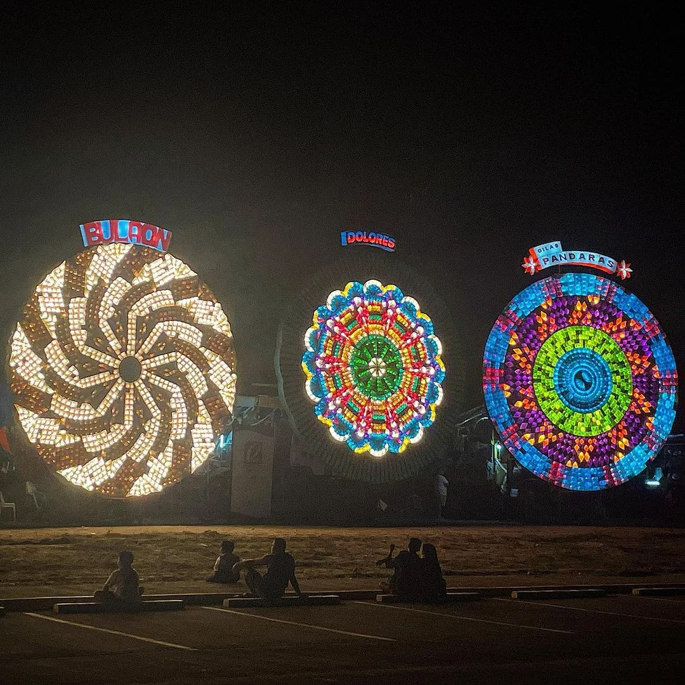
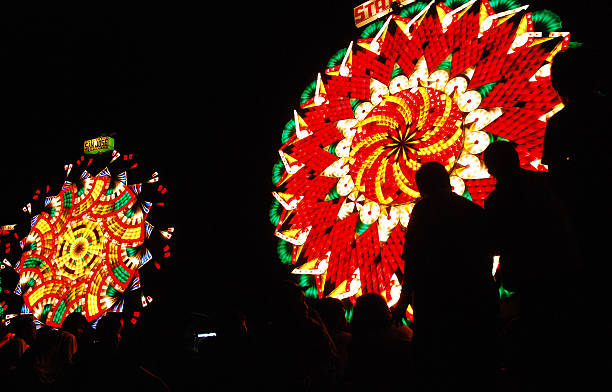

Ligligan Parul Sampernandu — The Most Dazzling Night in the Philippines
Every December — San Fernando
The Ligligan Parul Sampernandu (Giant Lantern Festival of San Fernando) is one of Asia's most awe-inspiring annual events. Held every third Saturday of December at the San Fernando City Oval, it draws hundreds of thousands of visitors from around the world.
Eleven barangays of San Fernando compete every year, each unveiling a massive parol (traditional Filipino Christmas lantern) — some reaching 6 meters in diameter — adorned with thousands of LED lights programmed in dazzling synchronized choreography.

The parol (from the Spanish farol, meaning lantern) has been a Filipino Christmas symbol for centuries. In Pampanga, it began as a simple five-pointed star made of bamboo and Japanese paper. Over the decades, artisans in San Fernando pushed the limits of what a parol could be — growing them larger, more intricate, and eventually illuminated by electric bulbs and, later, programmable LEDs.
Today, the Ligligan Parul is as much a testament to Kapampangan ingenuity and artisanship as it is a celebration of the Christmas spirit.